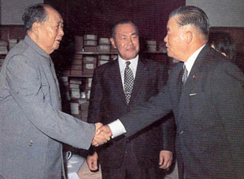

1972年2月21日，毛泽东在中南海会见美国总统尼克松。2月28日，中美双方在上海发表联合公报，决定实现两国关系正常化。 |
 |
1972年9月27日，毛泽东在中南海会见 |
1971年
8月至9月，在南方巡视期间，同当地党政军负责人多次谈话，揭露林彪的阴谋。途中机警地几次变更行动计划，于12日回到北京，粉碎林彪集团的反革命武装政变阴谋。
9月13日，同周恩来等果断地处理林彪叛逃事件。在周恩来请示要不要拦截林彪座机时，毛泽东表示：“由他去吧”。
10月25日，第二十六届联合国大会以压倒多数通过决议，恢复中华人民共和国在联合国的一切合法权利，把蒋介石集团的代表驱逐出去。
11月14日，接见参加成都地区座谈会的同志，为所谓“二月逆流”平反。
1972年
1月10日，参加陈毅的追悼会。
2月21日，会见来华访问的美国总统尼克松；28日，中美双方在上海发表联合公报，决定实现中美两国关系正常化。
9月27日，会见日本内阁总理大臣田中角荣；29日，中日两国政府发表联合声明，宣布实现中日邦交正常化，正式建立外交关系。
1973年
3月，提议恢复邓小平的国务院副总理职务。
1973年8月，毛泽东和五四时期的朋友、 |
8月24日至28日，主持召开中国共产党第十次全国代表大会，使一批老一辈无产阶级革命家重新进入中央委员会，但同时江青集团的势力也得到加强。
8月30日，在中共十届一中全会上当选中央委员会主席。
12月，提出邓小平担任中共中央政治局委员、人民解放军总参谋长。还提出要给贺龙、罗瑞卿、杨成武、余立金、傅崇碧平反。
1974年
1974年，毛泽东和周恩来在中南海 |
1974年，毛泽东和邓小平在北京 |
1月18日，批准转发《林彪与孔孟之道》材料。“批林批孔”运动由此开始。
2月22日，会见赞比亚总统卡翁达，谈话中提出“三个世界”划分的思想。
7月17日，在中共中央政治局会议上批评王洪文、张春桥、江青、姚文元搞帮派活动，第一次提出“四人帮”问题。
9月29日，经毛泽东批准，中共中央为贺龙平反。
10月4日，提议由邓小平担任国务院第一副总理职务。
11月12日，对江青来信作批示，批评她的“组阁”野心，明确指出“不要由你组阁（当后台老板）”。
1975年
1月13日至17日，
1959年6月，和韶山学校的师生们 |
第四届全国人民代表大会第一次会议在北京举行，会议重申在本世纪内实现四个现代化，选出以朱德为委员长的全国人大常务委员会组成人员，任命周恩来为总理、邓小平等为副总理的国务院组成人员。会后，周恩来病重，国务院工作实际由邓小平主持。
2月，在毛泽东支持下，邓小平开始领导对铁路、教育等方面的调整整顿工作。
5月3日，召集在北京的中共中央政治局委员谈话，强调要搞马列主义，要团结，要光明正大，再次批评“四人帮”。
7月14日，对文艺问题发表谈话，指出党的文艺政策应该调整。
11月下旬，审阅批准《打招呼的讲话要点》，错误地发动所谓“批邓、反击右倾翻案风”运动。
1976年
 |
1964年11月，周恩来率中国党政代表团到莫斯科参加十月革命47周年纪念活动，主动与苏共新领导勃列日涅夫等接触。但苏共当局没有改变赫鲁晓夫时期形成的对华政策。图为毛泽东、刘少奇、朱德到机场迎接周恩来归来。 |
1月8日，周恩来在北京逝世。
1月21日、28日，先后提议华国锋任国务院代总理和主持中央日常工作。
3月下旬至4月5日，北京市上百万群众连续几天自发到天安门广场，献花圈、诗词，悼念周恩来，声讨“四人帮”。毛泽东错误地批准了否定“天安门事件”的报告。
4月7日，根据毛泽东提议，中共中央政治局通过《中共中央关于华国锋同志任中共中央第一副主席、国务院总理的决议》和《关于撤销邓小平党内外一切职务的决议》。
7月6日，朱德在北京逝世。
9月9日，在北京逝世。